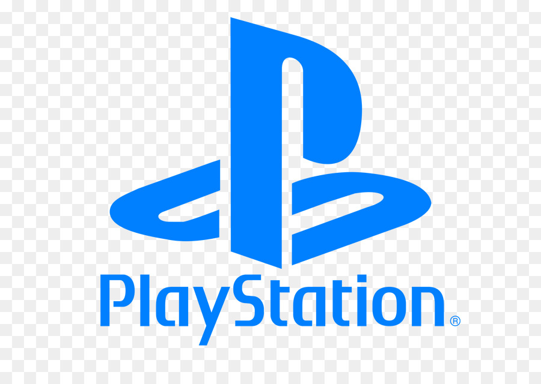

In cima alla classifica c’è la leggendaria Sony Interactive Entertainment, azienda fondata nel 1993 a Tokyo e che oggi offre giochi per qualsiasi piattaforma e canale. La sua Playstation (o semplicemente PS), oggi alla quinta generazione, è entrata nelle case della gran parte dei gamers di tutto il pianeta, con titoli come God of War e Uncharted, Bendy and the Ink Machine, Gravity Rush 2, Last Guardian, LittleBigPlanet 3, Ratchet & Clank Future, A Crack in Time, Resident Evil 6 HD Remaster, Shadow of the Colossus Collection (PS4), Star Wars Battlefront II Rogue One, X-Wing VR Mission (PSVR) e Superhot VR (PSVR). Solo su Playstation 5 nel 2021 la Sony ha venduto prodotti per 25 miliardi di dollari. Nel 2026 dovrebbe arrivare sul mercato mondiale la sesta generazione di PS.
Salendo al secondo posto ecco che incontriamo la Xbox Game Studios della Microsoft, una delle società di gaming più famose, con le storiche sedi di Redmong e Washington, da cui poi sono dipartite filiali operative in molti altri Paesi come Gran Bretagna e Canada. Nel 2021 le entrate sono state pari a 3,8 miliardi di dollari, mentre l’11% delle vendite totali sono rappresentate dalla console Xbox.
Al terzo posto troviamo la giapponese Nintendo, che è di fatto una delle società di videogiochi più antiche e di maggior successo al mondo. Meglio conosciuta per i titoli del calibro di Super Mario, Zelda e Pokémon, ma anche Donkey Kong (classe 1981), ad oggi ha venduto 5 miliardi di videogiochi e 790 milioni di console NES.